:D
 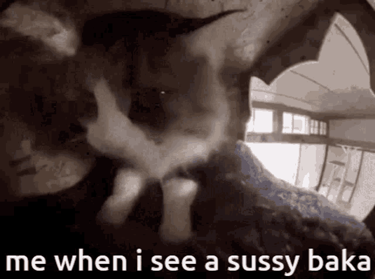
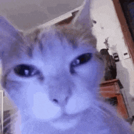
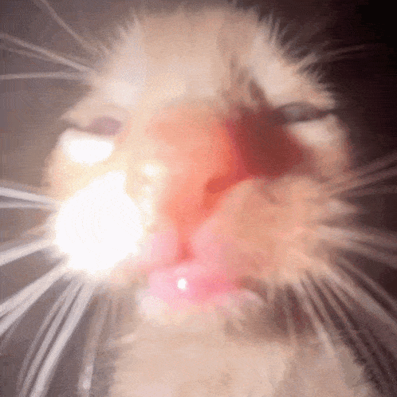
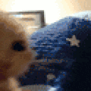
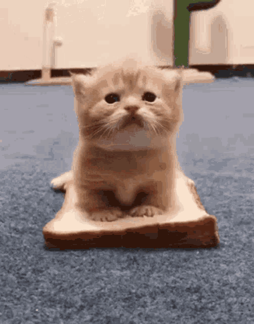
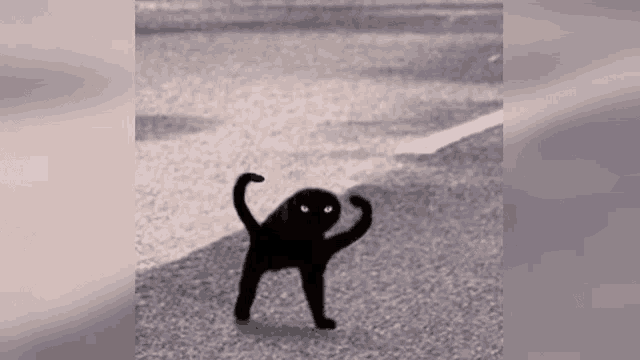
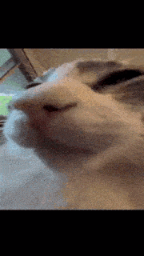
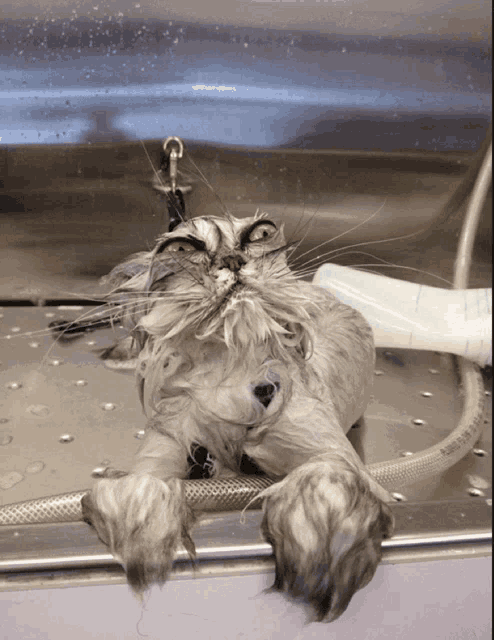
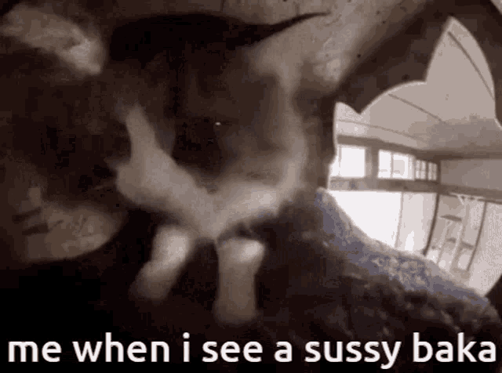
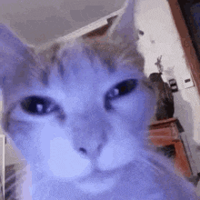
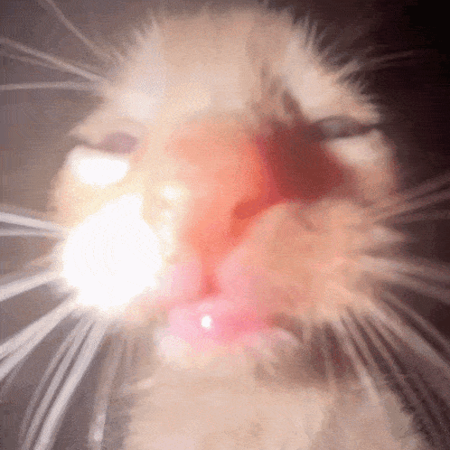
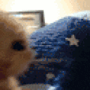
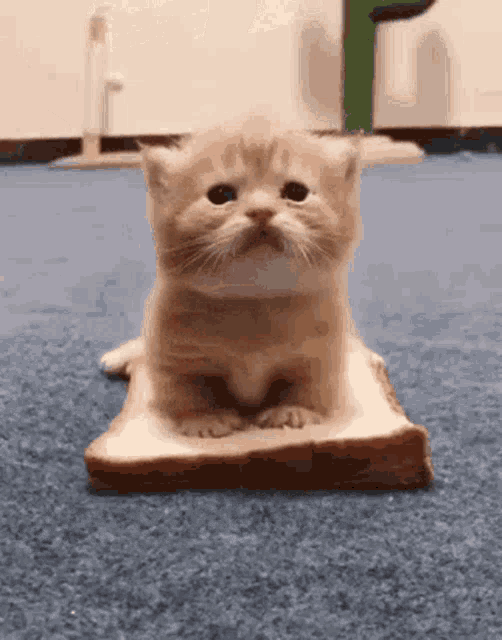
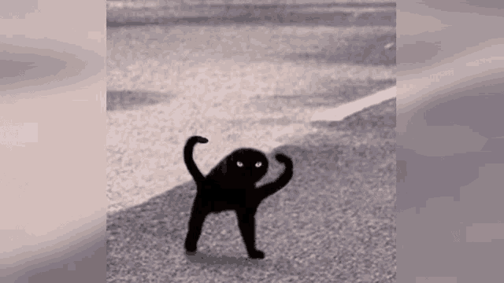
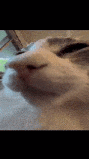
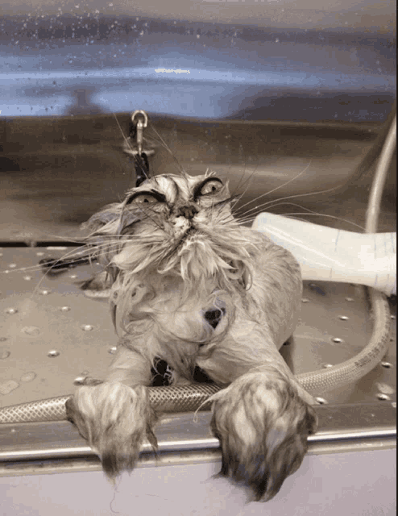
Przeprosiny MrBreada: "Witam wszystkich, Zwracam siê do Was z proœb¹ o ponowne rozwa¿enie mojej sytuacji na serwerze. Jestem œwiadomy, ¿e moje dzia³ania mog³y zostaæ Ÿle odebrane i w zwi¹zku z tym chcê wyjaœniæ, co siê sta³o, przeprosiæ i przedstawiæ, dlaczego uwa¿am, ¿e zas³ugujê na drug¹ szansê. Moje zamiary nigdy nie by³y z³e, a ca³y incydent by³ wynikiem nieporozumienia i emocjonalnej reakcji, któr¹ teraz ¿a³ujê.Chcia³bym zacz¹æ od wyjaœnienia, co dok³adnie siê wydarzy³o. Podczas jednej z dyskusji na kanale #random, pojawi³ siê temat, który wywo³a³ emocje. Ostatnio by³em zestresowany z powodu pewnych problemów osobistych, co mog³o wp³yn¹æ na moj¹ reakcjê. W pewnym momencie odpowiedzia³em zbyt ostro na komentarz jednego z u¿ytkowników, co zosta³o uznane za agresywne. Moje s³owa by³y nieodpowiednie i mog³y zostaæ odebrane jako atak na inn¹ osobê, co absolutnie nie by³o moim celem. Przepraszam wszystkich, których moje s³owa mog³y uraziæ. Chcia³bym podkreœliæ, ¿e nie mia³em z³ych intencji i nie chcia³em sprawiæ nikomu przykroœci. Zdajê sobie sprawê, ¿e moje wypowiedzi mog³y wprowadziæ niepotrzebn¹ atmosferê napiêcia i za to serdecznie przepraszam. Jestem œwiadomy, ¿e takie zachowanie nie jest akceptowane na serwerze i ¿a³ujê, ¿e dosz³o do tego incydentu. Przyznajê, ¿e w tej sytuacji nie zachowa³em odpowiedniego dystansu i emocje wziê³y górê nad rozs¹dkiem. Zamiast spokojnie wyjaœniæ swoje zdanie, skupi³em siê na formie, a nie treœci. Zdajê sobie sprawê, ¿e moje dzia³anie by³o niew³aœciwe i obiecujê, ¿e w przysz³oœci bêdê bardziej uwa¿a³ na sposób, w jaki reagujê na ró¿ne sytuacje. Po tej sytuacji jeszcze raz przeanalizowa³em zasady serwera i zdajê sobie sprawê, jak wa¿ne jest, by ka¿dy u¿ytkownik przestrzega³ zasad kultury i szacunku. Rozumiem, ¿e serwer jest miejscem, gdzie nale¿y promowaæ pozytywne i przyjazne œrodowisko, i chcê byæ czêœci¹ tej spo³ecznoœci, która d¹¿y do tego celu. Chcia³bym równie¿ zaznaczyæ, ¿e w ostatnich dniach przechodzi³em przez stresuj¹cy okres w ¿yciu osobistym, co mo¿e t³umaczyæ moj¹ nadwra¿liwoœæ i impulsywne reakcje. Nie chcê jednak, by to by³o wymówk¹ za moje zachowanie. Jestem odpowiedzialny za swoje s³owa i wiem, ¿e to, co siê sta³o, by³o moim b³êdem, bez wzglêdu na okolicznoœci. Ten serwer to dla mnie coœ wiêcej ni¿ tylko miejsce do zabawy – to spo³ecznoœæ, w której spêdzam du¿o czasu, w której pozna³em wielu fajnych ludzi i która stanowi wa¿n¹ czêœæ mojej codziennoœci. Naprawdê zale¿y mi na tym, by naprawiæ swoje b³êdy i nadal byæ czêœci¹ tej grupy. Przykro mi, ¿e moja reakcja mog³a zagroziæ tej harmonii i dlatego proszê o drug¹ szansê. Aby unikn¹æ podobnych sytuacji w przysz³oœci, postanowi³em bardziej œwiadomie podchodziæ do rozmów na serwerze. Bêdê stara³ siê unikaæ impulsowych reakcji i zamiast tego reagowaæ w sposób przemyœlany i opanowany. Bêdê tak¿e bardziej uwa¿nie œledziæ atmosferê rozmów, by unikaæ nieporozumieñ i niepotrzebnych konfliktów. Zdajê sobie sprawê, ¿e spo³ecznoœæ na serwerze zale¿y od wzajemnego szacunku i wspó³pracy. Dlatego obiecujê, ¿e postaram siê byæ bardziej pozytywny i pomocny w rozmowach. Chcê równie¿ zg³osiæ siê do moderatorów w razie w¹tpliwoœci, by upewniæ siê, ¿e moje wypowiedzi s¹ zgodne z zasadami serwera. Chcia³bym, by moje dzia³ania by³y przyk³adem pozytywnego wp³ywu na spo³ecznoœæ. Podsumowuj¹c, jestem w pe³ni œwiadomy swojego b³êdu i mam nadziejê, ¿e moje przeprosiny oraz zapewnienie o poprawie s¹ wystarczaj¹cymi dowodami na to, ¿e zas³ugujê na drug¹ szansê. Zale¿y mi na tym serwerze i mam nadziejê, ¿e bêdziecie w stanie daæ mi mo¿liwoœæ naprawienia tego b³êdu. Dziêkujê za poœwiêcenie czasu na przeczytanie moich s³ów i liczê na pozytywne rozpatrzenie mojej proœby. "